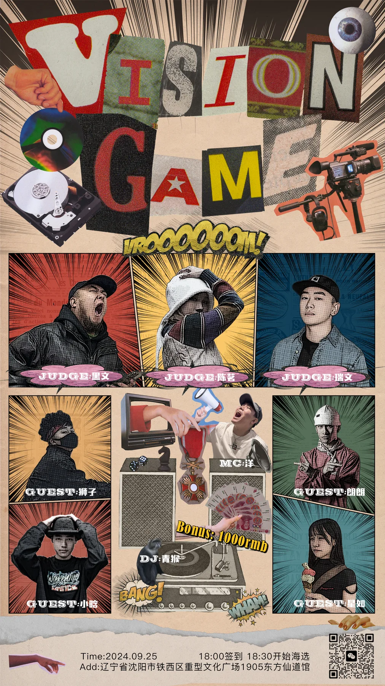
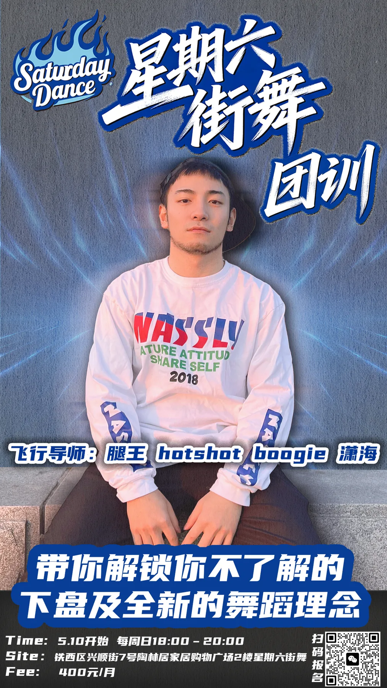

Hello, I’mGillian Guo.
Cultural signals × visual storytelling. Creative directions for brands and communities.
An HKU master’s student with training in urban research and visual design. I turn audience observations and cultural references into clear stories, campaigns and visual systems.
Selected work
From cultural observation to creative direction.
Selected projects from street-dance communities and creative commissions, with a research-led culture study to follow.

Vision Game
Campaign Concept / Participation
A playful street-dance battle campaign with a poster, role cards and medal system.
东方仙道
Culture / Community Identity
A visual reference archive from my time as a former crew member, showing how Chinese cultural materials shape the way I read and build creative work.

Workshop
Visual Communication / Promotion
A set of dance-culture promotion pieces shaped by instructor imagery, bold typography and a deliberately cool, street-native tone.

Featured research case
How does one culture change across two platforms?
A comparative study of Xiaohongshu and Bilibili, tracing how hooks, content structures, source handling and visible audience responses reshape the same street-dance culture.
Read the culture researchLet’s start a conversation.
Reach out about creative strategy, cultural research, media partnerships or a closer look at the work.